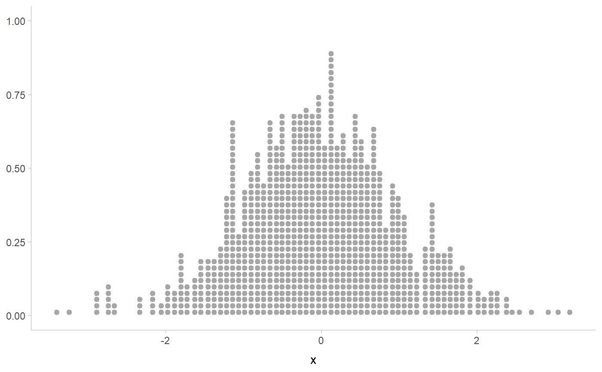
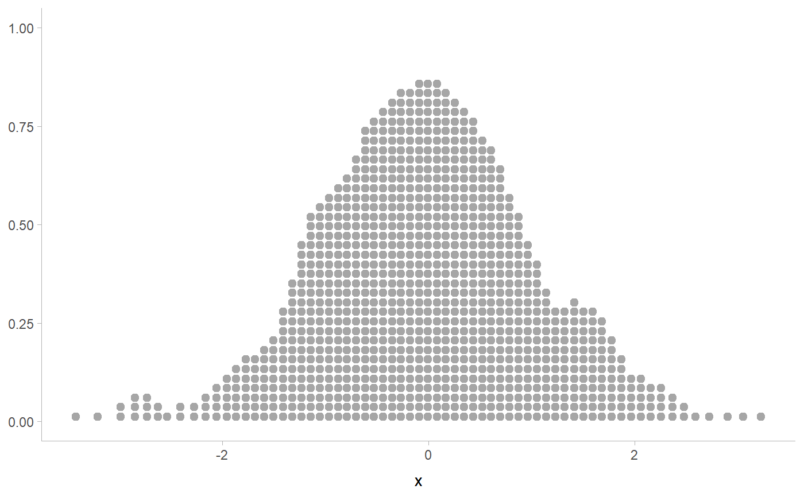
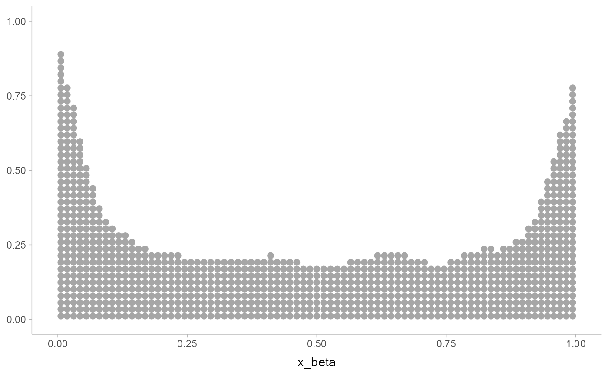

Smooth dot positions in a dotplot using a kernel density estimator ("density dotplots")
Source:R/smooth.R
smooth_density.RdSmooths x values using a density estimator, returning new x of the same
length. Can be used with a dotplot (e.g. geom_dots(smooth = ...)) to create
"density dotplots".
Supports automatic partial function application with waived arguments.
Usage
smooth_bounded(
x,
density = "bounded",
bounds = c(NA, NA),
bounder = "cooke",
trim = FALSE,
...
)
smooth_unbounded(x, density = "unbounded", trim = FALSE, ...)Arguments
- x
<numeric> Values to smooth.
- density
<function | string> Density estimator to use for smoothing. One of:
A function which takes a numeric vector and returns a list with elements
x(giving grid points for the density estimator) andy(the corresponding densities). ggdist provides a family of functions following this format, includingdensity_unbounded()anddensity_bounded().A string giving the suffix of a function name that starts with
"density_"; e.g."bounded"for[density_bounded()].
- bounds
<length-2 numeric> Min and max bounds. If a bound is
NA, then that bound is estimated from the data using the method specified bybounder.- bounder
<function | string> Method to use to find missing (
NA)bounds. A function that takes a numeric vector of values and returns a length-2 vector of the estimated lower and upper bound of the distribution. Can also be a string giving the suffix of the name of such a function that starts with"bounder_". Useful values include:"cdf": Use the CDF of the the minimum and maximum order statistics of the sample to estimate the bounds. Seebounder_cdf()."cooke": Use the method from Cooke (1979); i.e. method 2.3 from Loh (1984). Seebounder_cooke()."range": Use the range ofx(i.e theminormax). Seebounder_range().
- trim
<scalar logical> Passed to
density: Should the density estimate be trimmed to the range of the data? DefaultFALSE.- ...
Arguments passed to the density estimator specified by
density.
Value
A numeric vector of length(x), where each entry is a smoothed version of
the corresponding entry in x.
If x is missing, returns a partial application of itself. See automatic-partial-functions.
Details
Applies a kernel density estimator (KDE) to x, then uses weighted quantiles
of the KDE to generate a new set of x values with smoothed values. Plotted
using a dotplot (e.g. geom_dots(smooth = "bounded") or
geom_dots(smooth = smooth_bounded(...)), these values create a variation on
a "density dotplot" (Zvinca 2018).
Such plots are recommended only in very large sample sizes where precise positions of individual values are not particularly meaningful. In small samples, normal dotplots should generally be used.
Two variants are supplied by default:
smooth_bounded(), which usesdensity_bounded(). Passes theboundsarguments to the estimator.smooth_unbounded(), which usesdensity_unbounded().
It is generally recommended to pick the smooth based on the known bounds of
your data, e.g. by using smooth_bounded() with the bounds parameter if
there are finite bounds, or smooth_unbounded() if both bounds are infinite.
References
Zvinca, Daniel. "In the pursuit of diversity in data visualization. Jittering data to access details." https://www.linkedin.com/pulse/pursuit-diversity-data-visualization-jittering-access-daniel-zvinca/.
See also
Other dotplot smooths:
smooth_discrete(),
smooth_none()
Examples
library(ggplot2)
set.seed(1234)
x = rnorm(1000)
# basic dotplot is noisy
ggplot(data.frame(x), aes(x)) +
geom_dots()

# density dotplot is smoother, but does move points (most noticeable
# in areas of low density)
ggplot(data.frame(x), aes(x)) +
geom_dots(smooth = "unbounded")
# you can adjust the kernel and bandwidth...
ggplot(data.frame(x), aes(x)) +
geom_dots(smooth = smooth_unbounded(kernel = "triangular", adjust = 0.5))

# for bounded data, you should use the bounded smoother
x_beta = rbeta(1000, 0.5, 0.5)
ggplot(data.frame(x_beta), aes(x_beta)) +
geom_dots(smooth = smooth_bounded(bounds = c(0, 1)))
